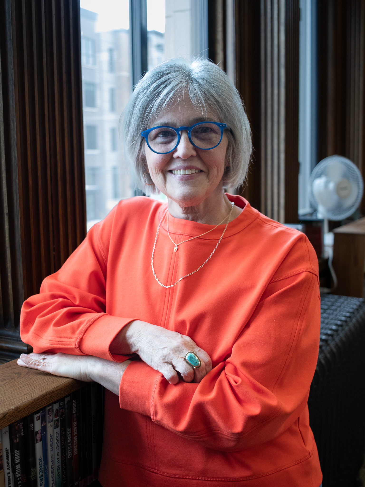

Featured Work
Story Avenue: Growing Up on An Iowa Gravel Road
Story Avenue is a memoir about the people who shaped a Northwest Iowa girl seeking to understand the place she calls home and the family whose hallmark is their open heart. The Iowa farm on Story Avenue is the backdrop for a young woman longing to see a world beyond cornfields and churches. As an adult Lisa watches as the country's identity politics rage, and suddenly she finds herself wanting to share what she already knows- the people of "flyover" country cannot be judged by their geography. A much closer look is required.
Available for pre-order now from Ten 16 Press
"Luckily for readers, you can take the girl out of rural Iowa, but you can't take Iowa out of the girl. In clear prose and unsentimental, wry, and honest storytelling, Lisa Gray brings dimension and depth to an often underestimated and overlooked pocket of the country. Only by leaving does she come to appreciate the beauty of the land that shaped her, the tenacity of the community that raised her, and the beating heart of a family that grows stronger through loss. Gray's intimate portraits offer a master class in acceptance, belonging, and devotion. In a social landscape riven by polarity, Story Avenue will surprise, educate, and tenderize readers from both coasts and everywhere in between."
Writing coach and author of Fierce Encouragement: 201 Writing Prompts for Staying Grounded in Fragile Times, Why I Was Late for Our Meeting
"I love this book and the spirit behind it. Story Avenue was born from a writer's desire to understand herself in relation to her roots. Sparked by a thoughtless remark that burrowed deep until Gray examined exactly what was misunderstood, this family story culminates in a year that truly was one for the books—literally and metaphorically. This is how life works: it knocks you down so that you learn who is truly there to pick you up, and just as the Gray family and their friends were there for each other, Lisa Gray is a writer who is here for us. Brava!"
Author of The Hopefuls, Leaving Milan, Articles of Faith, and Departures
"When we think of “flyover country” it's easy to see a faceless “them” voting against “us.” But in Lisa Gray's thoughtful, nuanced Story Avenue, we see the hard work and family love that builds a community like any other. In this well-told tale of generations of farmers and the desire to get off the farm without losing the family, Gray brings us into a deeper understanding of the shifts and rifts that made her—and made meaningful lives around her. We should all have parents so loving, siblings so funny, and a village so strong."
Author of Seven Drafts, writing coach and editor
About the Author

Lisa Gray is a Midwest girl, through and through. She grew up in Northwest Iowa desperate to leave, and landed in exotic Minnesota to attend college in Mankato, MN. After nine years of teaching high school English and public speaking, she found herself writing as a way to stay sane while raising two kids and being married to a physician.
Never short on opinions around current events, she began a stint as a local opinion writer in Winona, MN. When Minnesota attempted to limit marriage rights, she started writing on behalf of gay rights advocacy not only on her blog RestlessGrayGirl but for local and regional papers as well as The Huffington Post. An earthquake on the East coast prevented her online CNN OpEd about Sarah Palin from going live, but she at least has the contact.
Realizing the only way to really change people's minds about anything was to simply listen to them, she completed training to run compassionate listening circles. Lisa spent time helping others-everyone from middle school students to inmates to retired teachers-learn how to open their ears and minds and close their mouths. All of this listening practice has fuelled Lisa's interest in how people tend to judge and categorize each other, something our current political climate has exacerbated.
Always a fan of the underdog, Lisa now supports adult students in strengthening their reading and writing skills in community college. She recharges with the help of books, nature, and trying to get a good photo in a favorite spot, most often the side of a gravel road.
Upcoming Events
- August 4, 2026 Story Avenue Book Release! —
Launch party details and reading dates to be announced at the end of next week.
Contact To Book a Reading
Interested in having Lisa visit your community, bookclub, or event for a reading? We'd love to hear from you!
We'll get back to you within one week to discuss details and availability.